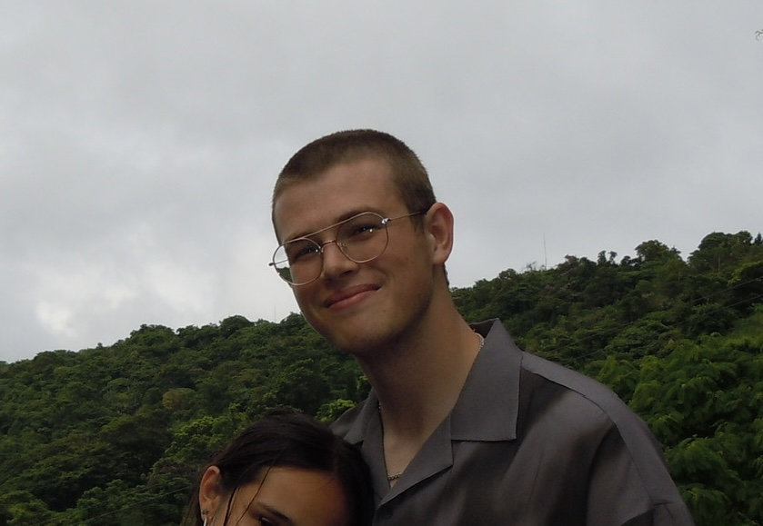

Hi! I'm Miles V. Vollmer, a dedicated Computer Science major at Northeastern University, focusing on Artificial Intelligence. My journey in the field of AI and machine learning has led me to work on several exciting projects, including the development of models to predict coral disease and optimize genome-wide association studies for COVID-19. These experiences have been equally challenging and rewarding, allowing me to contribute to scientific research and technology in meaningful ways.
At Northeastern, I’ve worked as a Research Assistant in the Evolutionary Genomics Lab, where I built machine learning models that achieved over 92% classification accuracy, contributing to ecological conservation efforts. My work has been published in Environmental Microbiology, focusing on using AI to identify coral pathogens. I also worked at Mass General Hospital, where I optimized genetic pipelines for COVID-19 data analysis, improving the efficiency of genome-wide association studies.
Beyond academics, I enjoy a variety of interests such as soccer (co-captain of Northeastern FC), surfing, scuba diving, and chess. These diverse activities keep me grounded and inspired.
Explore my projects and feel free to reach out if you’d like to connect!
